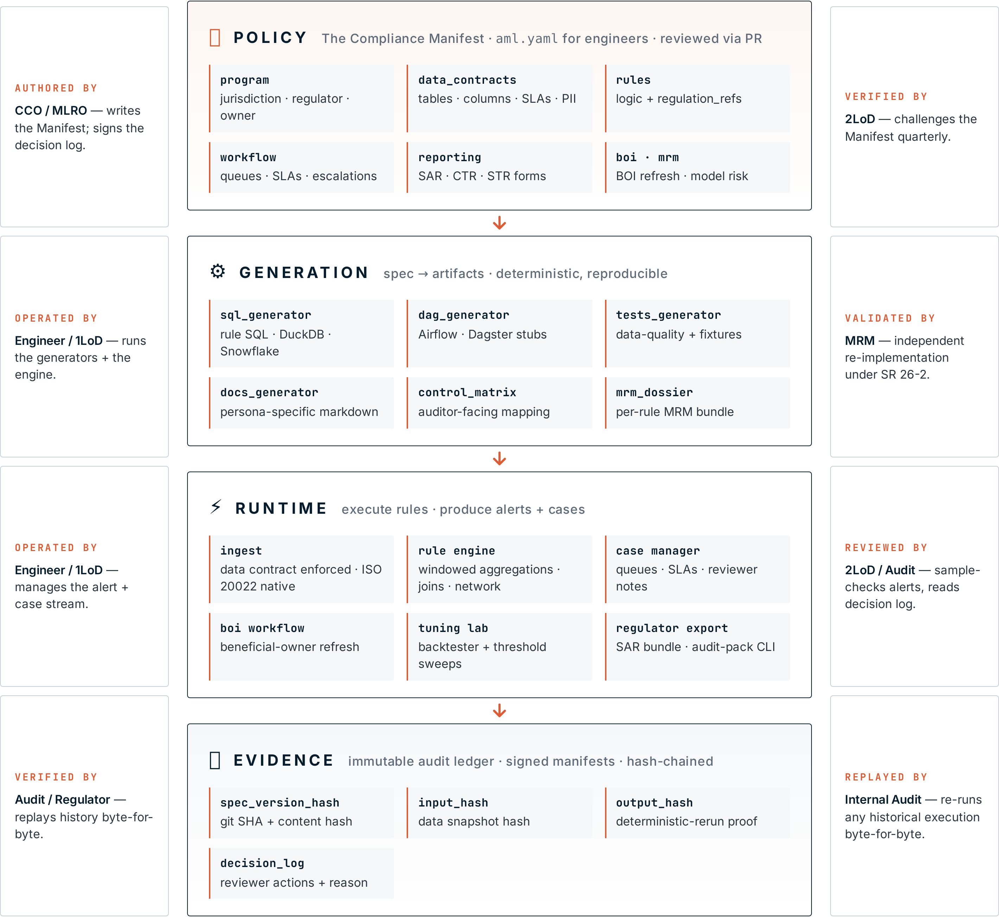

Reference Architecture¶

Live interactive version — full design with hover states + body copy at
/research/architectureon the demo site. The image above is the canonical diagram; the Mermaid below is the textual spec for accessibility.
Principle¶
The Compliance Manifest is the source of truth. Policy, data contracts, detection rules,
case workflow, and regulator mapping live in one versioned document — the
Compliance Manifest (an aml.yaml file, for engineers). Every
runtime artifact — SQL, DAGs, data-quality tests, dashboards, alert payloads,
audit ledger entries — is generated from the Manifest, never hand-written in
parallel. This is what kills the drift that causes AML fines.
Layered view¶
flowchart TD
subgraph POLICY["📜 POLICY LAYER · aml.yaml (plain YAML · reviewed via PR)"]
direction LR
P1[program metadata<br/>jurisdiction · regulator · owner]
P2[data_contracts<br/>tables · columns · SLAs · PII]
P3[rules<br/>logic + regulation citations]
P4[workflow<br/>queues · SLAs · escalations]
P5[reporting<br/>SAR · CTR · STR forms]
end
subgraph GEN["⚙️ GENERATION LAYER · spec → artifacts (deterministic)"]
direction LR
G1[sql_generator<br/>→ rule SQL · DuckDB · Snowflake]
G2[dag_generator<br/>→ Airflow · Dagster stubs]
G3[tests_generator<br/>→ data-quality + fixtures]
G4[docs_generator<br/>→ persona-specific markdown]
G5[control_matrix<br/>→ auditor-facing mapping]
G6[mrm_dossier<br/>→ per-rule MRM bundle]
end
subgraph RUN["⚡ RUNTIME LAYER · execute rules · produce alerts + cases"]
direction LR
R1[ingest<br/>data contract enforced<br/>+ ISO 20022 native]
R2[rule engine<br/>windowed aggregations · joins · network]
R3[case manager<br/>queues · SLAs · reviewer notes]
R4[BOI workflow<br/>beneficial-owner refresh]
R5[tuning lab<br/>backtester + threshold sweeps]
R6[regulator export<br/>SAR bundle · audit-pack CLI]
end
subgraph EV["🔒 EVIDENCE LAYER · immutable audit ledger · signed manifests"]
direction LR
E1[spec_version_hash<br/>git SHA + content hash]
E2[input_hash<br/>data snapshot hash]
E3[rule_output_hash<br/>deterministic-rerun proof]
E4[decision_log<br/>reviewer actions + reason]
end
POLICY ==> GEN
GEN ==> RUN
RUN ==> EV
classDef layer fill:#f6f7f9,stroke:#051c2c,stroke-width:2px,color:#051c2c
classDef item fill:#ffffff,stroke:#c8cfd6,stroke-width:1px,color:#2b3641,font-size:13px
class POLICY,GEN,RUN,EV layer
class P1,P2,P3,P4,P5,G1,G2,G3,G4,G5,G6,R1,R2,R3,R4,R5,R6,E1,E2,E3,E4 itemWho reads which layer:
| Persona | Layer they author | Layer they verify |
|---|---|---|
| CCO / MLRO | Policy (writes the spec) | Evidence (signs decision log) |
| Engineer / 1LoD | Generation (runs generators) | Runtime (operates engine) |
| 2LoD / MRM | — | Generation + Runtime (challenger model) |
| Internal Audit / Regulator | — | Evidence (replays history byte-for-byte) |
What the spec controls¶
| Concern | Where it lives in the spec | Generated artifact |
|---|---|---|
| Data freshness / SLAs | data_contracts[*].freshness_sla |
Pipeline sensor + alert |
| PII classification | data_contracts[*].columns[*].pii |
Column masks, access policy |
| Detection logic | rules[*].logic |
SQL query + unit fixture |
| Regulation traceability | rules[*].regulation_refs |
Control matrix row + audit metadata |
| Reviewer workflow | workflow.queues |
Case routing + SLA timers + escalation engine |
| SAR / CTR reporting | reporting.forms |
Regulator export templates + audit-pack CLI |
| ISO 20022 ingestion | data_contracts[*].iso20022 |
pacs.008/009/004 + pain.001 validators |
| Beneficial-owner tracking | boi.refresh_policy |
BOI Workflow page + freshness alerts |
| Model risk management | rules[*].mrm |
Per-rule MRM dossier + 4-quarter backtester |
| Retention | retention_policy |
Ledger TTL + export redaction |
Data integration¶
AML's biggest practical pain isn't detection logic — it's getting one clean view across core banking, payment rails, KYC vendors, sanctions screeners, and fraud systems. The whitepaper Data is the AML problem enumerates 11 specific data pains; the framework closes them across four surfaces:
Connectors — data/sources.py ships 9 source loaders out of the
box. The same aml.yaml runs against any of them by changing one CLI
flag:
| Source | Flag | Notes |
|---|---|---|
| Synthetic | (default) | Deterministic test data — every demo + CI run uses this |
| CSV | --data-source csv --data-dir <dir> |
One file per data_contracts[*].id |
| Parquet | --data-source parquet --data-dir <dir> |
Same shape, columnar |
| DuckDB | --data-source duckdb --db-path <file> |
One table per contract |
| Snowflake | --data-source snowflake |
Via DuckDB snowflake extension |
| BigQuery | --data-source bigquery |
Via DuckDB bigquery extension |
| S3 | --data-source s3 --data-dir s3://... |
CSV/Parquet via httpfs |
| GCS | --data-source gcs --data-dir gs://... |
CSV/Parquet via httpfs |
| ISO 20022 | --data-source iso20022 --data-dir <xml-dir> |
pacs.008 / pacs.009 / pacs.004 / pain.001 |
Contract enforcement — every data_contracts[*] declaration in
the spec gates ingestion. aml run --strict refuses to execute when
contract checks fail (PR-DATA-1 fail-closed validation). Per-attribute
freshness pinning (max_staleness_days + last_refreshed_at_column,
PR-DATA-2) closes the "stale beats stale beats stale" DATA-2 pain
without per-pipeline plumbing.
ISO 20022 native — data/iso20022/parser.py reads pacs.008
(customer credit transfer), pacs.009 (FI credit transfer), pacs.004
(payment return), and pain.001 (corporate batch initiation). Each
parsed row carries msg_kind so downstream rules + the dashboard can
filter / count by message type. Closes DATA-8.
Lineage walk-back — every alert carries the source-rule version,
spec hash, input-file hashes, and ingestion run id (PR-DATA-4
walk_lineage()). The Audit & Evidence page renders the chain;
aml export --include-lineage packages it for the auditor. Closes
DATA-4.
For the operator-facing summary surface — "what data is flowing through this AML program right now?" — see the Data Integration dashboard page (page 30). It lays out the 9 connectors, contract roll-up in whitepaper vocabulary (completeness / staleness / checks), ISO 20022 message-type counts, and a DATA-N → artifact map that lets a data engineer verify each whitepaper claim against the concrete framework artifact that closes it.
Tier-1 deployment targets¶
The framework is deployment-agnostic — same artefacts, different glue per cloud:
| Tier | Target | Glue |
|---|---|---|
| On-prem | Bare K8s + Postgres + S3-compatible store | Helm chart in deploy/helm/; JWT_SECRET + DATABASE_URL from K8s Secrets |
| Microsoft Azure | AKS + Azure Database for PostgreSQL + Blob/ADLS Gen2 + Key Vault + Entra ID | Same Helm chart with azure: block populated. Workload identity = no static secrets. Round 15 (PRs #251–#254) |
| AWS (community-supported) | EKS + RDS + S3 + Secrets Manager + IAM | Same chart; azure: block stays empty. S3 source already shipped |
| Google Cloud (community-supported) | GKE + Cloud SQL + GCS + Secret Manager + IAP | Same chart; GCS source already shipped |
| Snowflake / BigQuery | Either as a data plane behind any of the above | DuckDB extensions; no warehouse-specific deploy code |
The Round-12 lineage chain (walk_lineage(case_id)) is data-source-
agnostic — source_path reflects whichever URI the data was loaded
from (abfss://..., s3://..., data/input/txn.csv, etc.).
Determinism & reproducibility¶
Every rule execution records:
spec_version— git SHA ofaml.yamlplus a content hash.input_hash— hash of the ordered input rows used (or snapshot id).output_hash— hash of the alert set.engine_version— version of this framework.
An auditor can re-run any historical execution and verify the output hash matches. If it doesn't, the chain of custody is broken and the run is flagged.
Why not a rules engine in application code?¶
A pure Python/Java rules engine lets any developer tweak detection logic in a Monday-morning hotfix, and the CCO only hears about it three audits later. Declarative specs with PR-based review force a control point: policy changes go through compliance sign-off before they change pipeline behaviour. The same argument is why Terraform, dbt, and Kubernetes manifests won — spec > code for regulated change.
Extensibility¶
Two escape hatches, by design:
custom_sqlon a rule lets an engineer drop in handwritten SQL when the declarative logic primitives aren't expressive enough. The spec still carries the regulation citation, severity, workflow, and evidence list, so the audit trail survives.python_refon a rule points at a Python callable (e.g. an ML scorer) that returns an alert set. The spec captures the model id and version so model risk management can validate it.
Both escape hatches mean some generation properties weaken (e.g. the control matrix can't auto-extract thresholds), but the policy layer is preserved.
What this framework is not¶
- Not a replacement for a core banking system or transaction store. It reads from whatever warehouse you have.
- Not a certified detection model catalogue. Rules in the examples are illustrative starting points, not validated typologies.
- Not a SAR filing service. It produces a well-formed bundle; the regulatory submission step is institution-specific.
See personas.md for the role-by-role interaction model and
regulator-mapping.md for regime-specific notes.